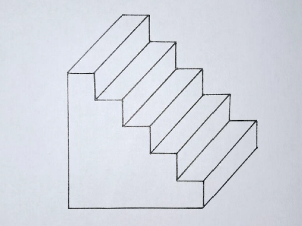
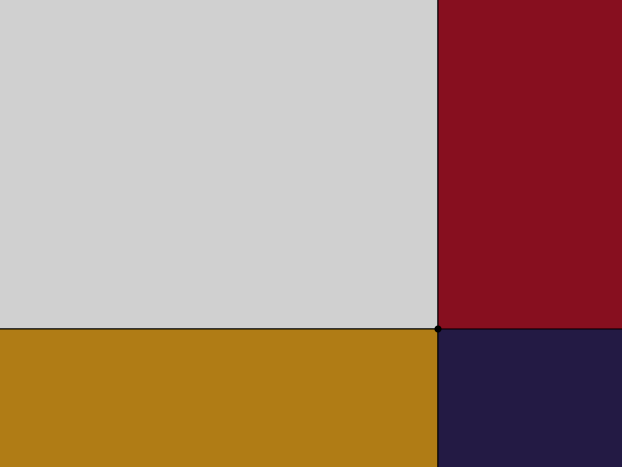
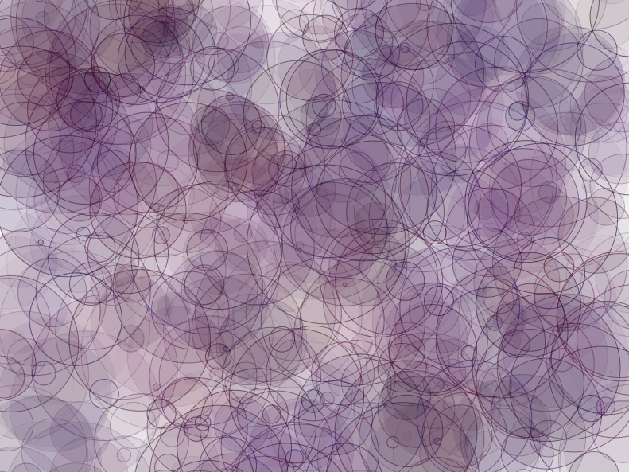
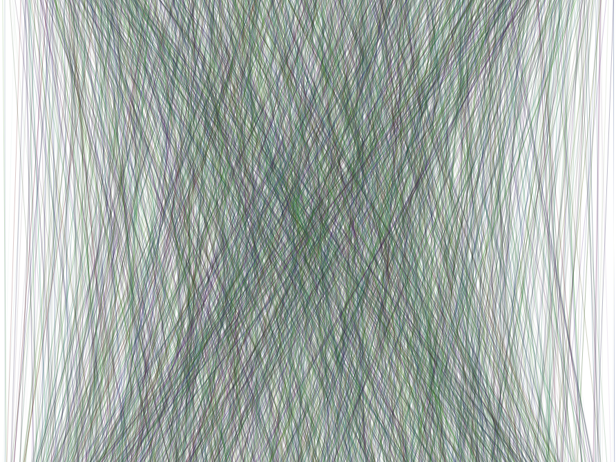
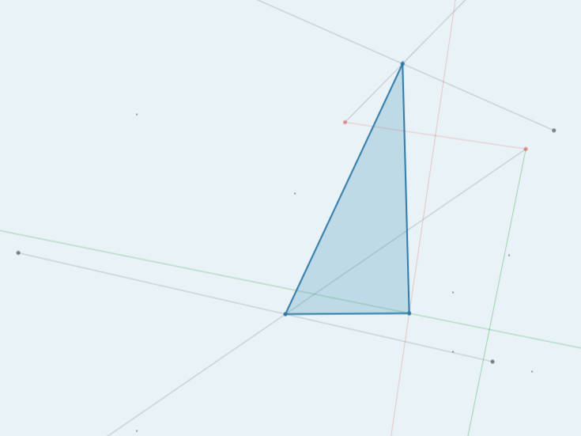
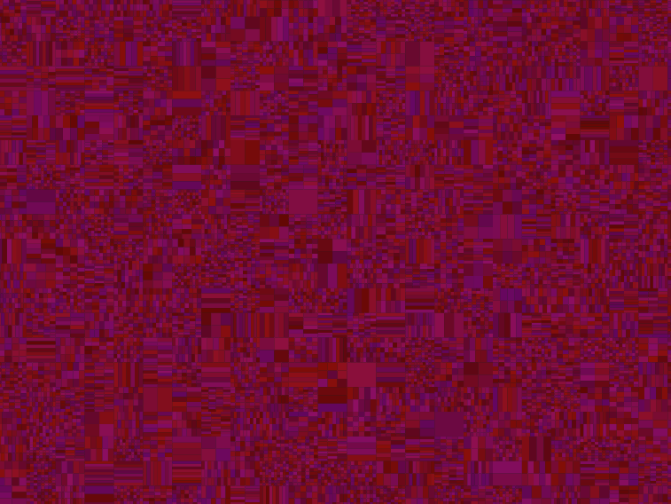
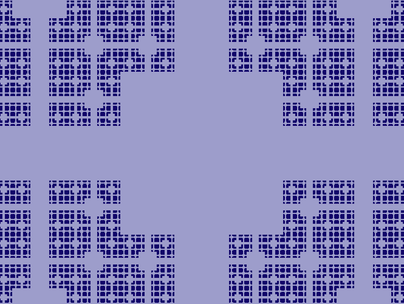
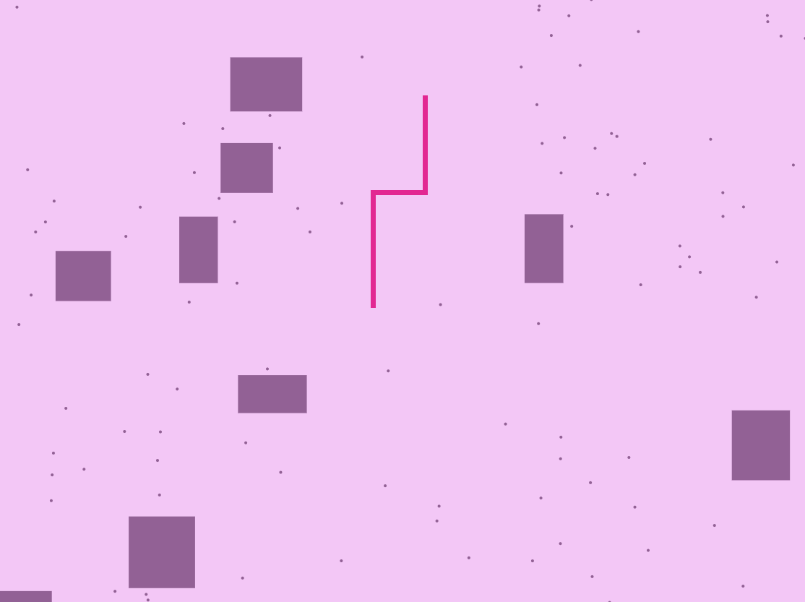

I am a 1st year undergrad student at NTUA School of Architecture. This is my personal website for ARCH 4342 Computational Methods in Creative Arts and Sciences and I use it to post my projects. I learn how to code and I use P5.js to create most of my work, which is demonstrated below.
For the first assignment, I wrote code to design a three-dimensional staircase. However, the outcome is determined by the designer, who decides the number of the steps the staircase consists of.
For the second assignment, I wrote code to design the pictures below:
A program that draws a grid of four rectangles, each with width and height that change dynamically based on the X and Y coordinates of the position of the mouse cursor.
A program that creates circles with random sizes, colors and opacities and places them randomly on the screen.
A program that creates random straight lines connecting a random point on the top edge of the canvas to a random point on the bottom edge of the canvas. Each line has a random color.
In the last program, I recreated one of Sol LeWitt's works named ''The Location of a Triangle'', defining some of its steps parametrically based on the position of the mouse cursor on the screen.
For the third assignment, I wrote code to design the pictures below:
A program that draws a grid consisting of cells with standard dimensions, each containing sub-grids with cells of random sizes and shades.
A program that generates the fractal pattern of the image below using recursion.
In the last program, I created a version of the snake arcade game.
